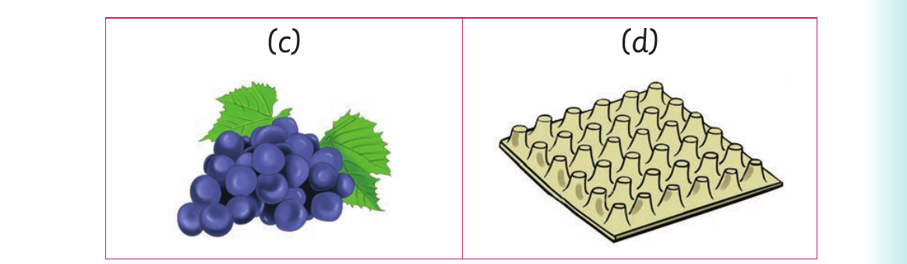

Words with gr, pr and tr consonants - continued

Item C. A picture of grapes. Item D. A picture of a tray.
Activity 2
Read aloud or sign the following sentences: (a) The grass is always green. (b) The Standard Two pupils are brilliant. (c) Mum made wine from grapes. (d) I will prove you wrong. (e) They have won a prize. (f) I know the price of rice. (g) We can sit under the palm tree. (h) We put the trash inside the dustbin. (i) I can trace capital letters. (j) The jug is on the tray.